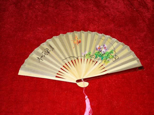
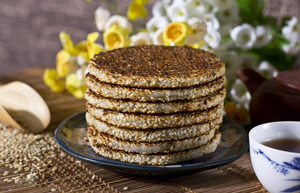

无论身在何处，我都忘不了自己的家乡，她的美，她的轮廓一直深深烙印在我心里，她是我心灵的港湾！
我的家乡还有著名的刘伯承元帅纪念馆！他为中华民族的解放事业建立了不朽功勋，为我国的国防建设和社会主义建设事业作出了杰出贡献，对我军向正规化、现代化迈进作出了卓越的贡献。
我的家乡位于开州区的西南部，是一个名副其实的千年古镇——临江镇，山清水秀，历史悠久，近几年发展的很快，有了很多高楼大厦拔地而起，还有众多特色产品，都是我作为开州临江人的骄傲！其中最为出名的就是香绸扇和冰薄月饼了！临江镇的香绸扇传说可是十里飘香，老远就能闻到别人手里拿的扇子的香味，夏天热的时候扇一扇，神清气爽，心旷神怡。再就是镇上出名的冰薄月饼了，香甜可口，每逢中秋季卖的最多的就是它了，听说经常还有其他地方的人专门跑来买呢！